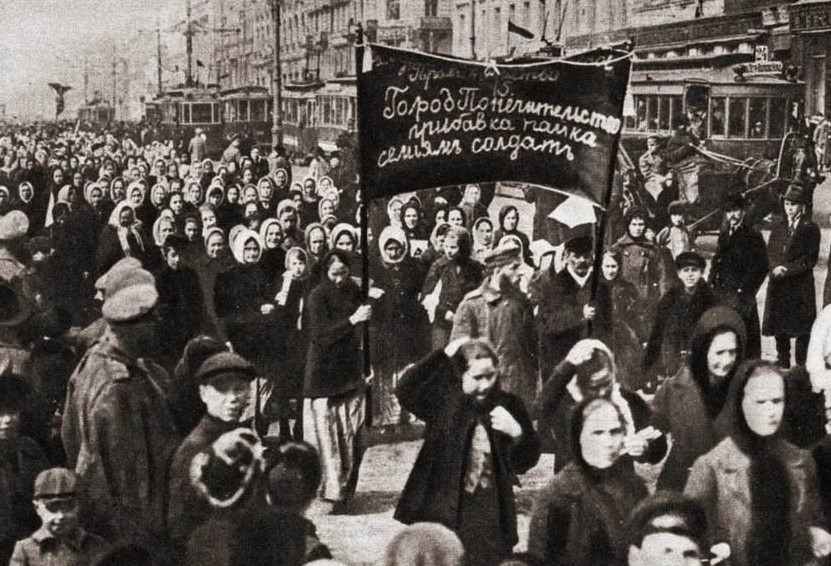

Instituciones que ayudan a las mujeres en México

la Violencia contra las Mujeres (Conavim)

El día de la mujer se conmemora alrededor del mundo para hacer
conciencia sobre la importancia de empoderar a las mujeres en todos
los entornos, proteger sus derechos y garantizar que éstas puedan
alcanzar todo su potencial; de igual forma sirve para visibilizar la
desigualdad y discriminación que aún viven las mujeres en todo el mundo.
El 8 de marzo, para muchos, significa rendir homenaje y
hacer regalos a las mujeres. Sin embargo, la fecha celebrada
tiene sus orígenes lejos de las fiestas y los regalos, y está
marcada por la lucha, fuertes movimientos de reivindicación
política y laboral, huelgas, marchas y persecuciones.
En un contexto de industrialización temprana de las fábricas,
los trabajadores (que en su mayoría eran mujeres y niños)
celebraron sucesivas manifestaciones para exigir mejores
condiciones de trabajo y salarios, jornadas laborales
más cortas y la prohibición del trabajo infantil.

En 1903, en este escenario, surgió la Liga Sindical Femenina, una
organización de trabajadoras asalariadas estructurada por mujeres
socialistas, sufragistas y profesionales liberales norteamericanas.
El último domingo de febrero de 1908, las mujeres de este sindicato
celebraron una manifestación denominada "Día de la Mujer".
Tiene sus raíces en Copenhague (Dinamarca), cientos de participantes de 17
países reunidas en la segunda conferencia internacional de mujeres socialistas
(la primera había tenido lugar en 1907) deciden organizar anualmente una
jornada de la mujer teniendo por mira reforzar su lucha por obtener el sufragio
femenino universal.
La plenaria de la Convención se realizó en 1910 en Copenhagen,
Dinamarca y se aprobó la proposición de Clara Zetkin (elegida
como Secretaria General del Congreso de Mujeres) de decretar
el Día Internacional de la Mujer, el 8 de Marzo. A partir de esa
reunión se comenzó a celebrar en varios países del mundo.
Finalmente, en 1975, coincidiendo con el Año Internacional
de la Mujer, las Naciones Unidas conmemoraron el Día
Internacional de la Mujer por primera vez, el 8 de marzo.
Desde esa fecha la ONU y sus agencias han trabajado en la
lucha de género de manera incansable.
Desde 1975 que fue la primera vez en festejarse por la ONU
hasta fecha se llevan 48, casi 49 años el 8 de marzo de este
2024; es una fecha para unir a activistas de todo el mundo,
celebrar logros pero también tomar medidas que ayuden a
mejorar la calidad de vida de las mujeres.
| ¿Cómo? | ¿Cuando? | ¿Donde? | ¿Por qué? |
| Surgió en la segunda conferencia de Mujeres Socialistas en 1910. | Se estableció el 8 de marzo en honor a una serie de eventos ocurridos en esa fecha de 1908. | La primera conmemoración masiva tuvo lugar en 1911 en varios países europeos. | El objetivo original era destacar las demandas de las mujeres en cuestiones como el derecho al voto, el trabajo justo y la igualdad de género. |
| ATRÁS | MENÚ | SIGUIENTE |